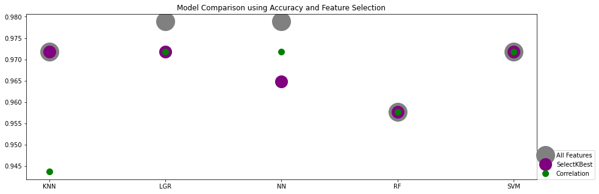
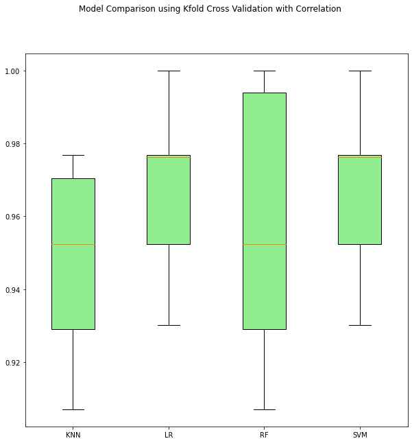

Machine Learning Project
Analysis and Comparison:
There are various ways to compare Machine Learning Models. The metric we chose to focus on for this comparison is accuracy. The chart above highlights the 5 models we selected: K Nearest Neighbors (KNN), Logistic Regression (LGR), a Deep Neural Network with 2 hidden layers and Adam Optimizer (NN), Random Forest (RF) and Supported Vector Mchine (SVM). The first aspect to note is that changing the set of features to make a prediction on, does not affect RF or SVM as they both show an unchanged level of accuracy regardless of feature selection, repectively 96% and 97%. The model most affected by the feature slelection is the NN, where out of 30, 7 of the lowest correlated features selected yielded the best performance at 97%. That same correlation-based selection affected the performance of KNN from 97% with all Features down to 94%. Finally, we like the performance of the Logistic Regression the best, as it maintains a good performance with either feature selections.
Another strategy we have implemented is the KFold Cross Validation with a 10-fold group. The strategy uses an algorithm that, simplified, results in shuffling the dataset in a random manner, then for each group perform a split, fit a model on the training set then evaluate it on the testing set, discard the model and retain the evaluation scores. We applied this methos on three sets of data: dataset with all 30 features, dataset with only SelectKBest selected 7 features and a dataset with only 7 features selected through correlation analysis. The boxplot above is the comparative result of the Correlation-based selection. It shows Logistic Regression and SVM demonstrating the best performance as well as the safest behavior compared to the high variability of the random forest model and KNN.
